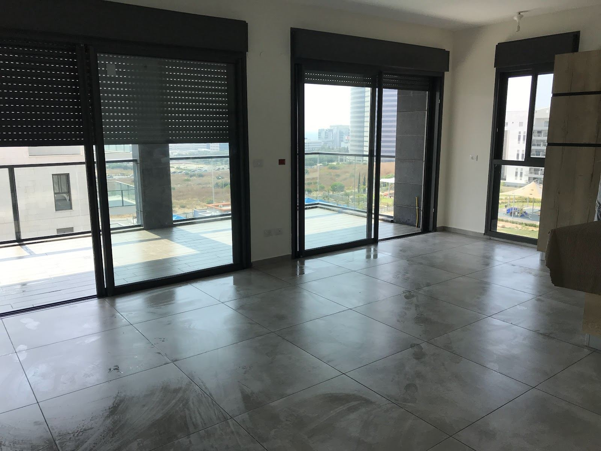

דני זומרשטייןDani Zomershtein
הצד היפה של התיווךThe good side of real estate
סיטידן נכסים בע״מ · מכירה, קנייה והשכרה של דירות בחיפהCityDan Properties Ltd · selling, buying and renting homes in Haifa
מי שתעבדו מולוWho you’ll work with
דני זומרשטיין, מתווך ובעלים של סיטידן נכסים בע״מ, לסקוב 3 בחיפה.Dani Zomershtein, broker and owner of CityDan Properties Ltd, 3 Laskov St, Haifa.
״דרך ארץ״“Derech Eretz”
נציב תלונות הציבור וחבר ועדות אתיקה וגישור בהתאחדות המתווכים הארצית.Public complaints commissioner and member of the ethics and mediation committees of the national brokers’ association.
נאות פרסNeot Peres
מדלן מנה את דני בין המובילים בתיווך בשכונה.madlan listed Dani among the leading brokers in the neighbourhood.
100
ביקורות בגוגל, דירוג 5.0Google reviews, rated 5.0

כל דירה מתחילה בסיורEvery home starts with a viewing
האור, המרפסת, הנוף: רואים הכול במקום.The light, the balcony, the view: you see it all in person.
תמונה מעמוד העסק בגוגל · צילום: Yair KolPhoto from the business’s Google page · by Yair Kol
למכור, לקנות, להשכירSell, buy, rent
שלושה תחומים, משרד אחד ברחוב לסקוב.Three kinds of work, one office on Laskov Street.
-
מכירת דירהSelling
טיפול בדירה שלכם למכירה.Handling your home for sale.
-
ליווי רוכשיםBuyers
ליווי בחיפוש ובקנייה של דירה.Guidance through the search and the purchase.
-
השכרה וניהולRentals and management
השכרת דירות, ניהול וטיפול מקיף בדירות ובשוכרים.Renting out homes, with full management of the flat and the tenants.
תמונה להמחשה · רמות ספיר, חיפהIllustrative photo · Ramot Sapir, Haifa
מנקודה א׳ לנקודה ב׳From point A to point B
כך נראית הדרך עם דני.What the way there looks like with Dani.
פגישת היכרותGetting acquainted
מספרים לדני מה אתם מחפשים.Tell Dani what you are looking for.
התאמהMatching
נכסים לפי הצרכים האמיתיים שלכם.Homes chosen by what you really need.
סיוריםViewings
רואים את הדירות יחד.You see the homes together.
חוזהContract
ליווי עד החתימה.Guidance all the way to signing.
תלו שלט, ודני יקבל אותו בוואטסאפHang a sign, and Dani gets it on WhatsApp
054-441-1111 · דניDani
לחיצה מחליפה בין מכירה, השכרה, קנייה ושכירותTap to switch between selling, renting out, buying and renting
שליחה לדני בוואטסאפSend to Dani on WhatsApp5.0
מה מספרים על דניWhat people say about Dani
100 ביקורות בגוגל. הנה חמש מהן, כלשונן.100 Google reviews. Here are five, translated from Hebrew.
החיבור היה מהרגע הראשון. שיתפנו את דני בצרכים שלנו, והוא אמר לנו ״אני אביא אתכם מנקודה א׳ לנקודה ב׳״, וכך היה! הכל תוך כדי מתן יחס אישי, אנושי, חברי, ודואג! כל כך שמחים שהלכנו עם דני ונתנו לו את המושכות! תודה על כל העזרה והדאגה! שמחים ומודים שבחרנו בשני לתהליך!
We clicked from the very first moment. We shared our needs with Dani and he told us, “I’ll take you from point A to point B”, and so it was! All with personal, human, friendly and caring attention! So happy we went with Dani and handed him the reins! Thank you for all the help and care! Happy and grateful we chose him for the process!
דני היקר
תודה רבה על שירות מקצועי סבלני אתה תותח אמיתי במקצוע שלך ואין ספק שאמליץ לכולם
מעריכים מאוד !!!!!Dear Dani, thank you so much for professional, patient service. You are a real ace at what you do and I will no doubt recommend you to everyone. Much appreciated!
דני הוא מתווך מקצועי, אמין ויסודי. מלווה את התהליך בצורה מסודרת וברורה, זמין לשאלות, פועל בשקיפות מלאה ושם דגש על התאמת הנכס לצרכים האמיתיים של הלקוח. העבודה מולו נעימה, עניינית ומשרה ביטחון. מומלץ למי שמחפש תיווך רציני בלי משחקים!
Dani is a professional, reliable and thorough broker. He guides the process in an orderly, clear way, is available for questions, works with full transparency and focuses on matching the property to the client’s real needs. Working with him is pleasant, to the point and reassuring. Recommended for anyone looking for serious brokerage without games!
ממליצה בחום על דני. דני הוא מתווך מקצועי, נחמד ואמין. הוא עזר לנו למצוא דירה מתאימה בדיוק לצרכים שלנו, והכל באדיבות, יושרה ומקצועיות. התהליך מולו היה נוח, שקוף, לא חששנו שמסתירים מאיתנו מידע מהותי לגבי הנכס (כפי שקורה המון מול מתווכים), ויכלנו לקבל את ההחלטה שלנו אם לרכוש או לא, על בסיס כל המידע הרלוונטי. בחרנו לבצע את העסקה ואנו ממליצים מאוד על דני וגם על נלי היעילה והמקסימה ממשרדו.
I warmly recommend Dani. He is a professional, kind and trustworthy broker. He helped us find a flat that fits our needs exactly, all with courtesy, integrity and professionalism. The process with him was comfortable and transparent; we never worried that important information about the property was being kept from us (as happens a lot with brokers), and we could decide whether to buy based on all the relevant information. We chose to go ahead with the deal and highly recommend Dani, and also the efficient and lovely Nelly from his office.
ברצוני להמליץ בחום על דני שליווה אותי בתהליך השכרת הדירה. כבר מהרגע הראשון הוא היה מקצועי, אדיב, סבלני וזמין לכל שאלה או צורך שעלה במהלך הדרך וליווה אותי עד לסגירת החוזה עם המון סבלנות ורצון טוב. התחושה הייתה שיש על מי לסמוך. תודה רבה על חוויה חיובית, נעימה ויעילה – ממליצה בחום!
I would like to warmly recommend Dani, who guided me through renting out my flat. From the very first moment he was professional, courteous, patient and available for every question or need that came up along the way, and he stayed with me until the contract was signed, with a lot of patience and goodwill. It felt like there was someone to rely on. Thank you for a positive, pleasant and efficient experience – warmly recommended!
שאלות לפני שמתקשריםQuestions before you call
התשובות מהכרטיס, מהעלון ומעמוד העסק בגוגל.Answers taken from his card, his flyer and his Google page.
במה דני מטפל?What does Dani handle?
מכירת דירות, ליווי רוכשים לקנייה, השכרת דירות, וניהול וטיפול מקיף בדירות ובשוכרים.Selling homes, guiding buyers, renting out flats, and full management of flats and tenants.
אפשר להתחיל בפגישה?Can we start with a meeting?
כן. דני מציע פגישת היכרות וייעוץ מקצועי ללא התחייבות.Yes. Dani offers an introductory meeting and professional advice with no obligation.
מה הרקע של דני?What is Dani’s background?
יועץ ומשווק נדל״ן, מורשה משרד המשפטים. הוא גם נציב תלונות הציבור וחבר ועדות אתיקה וגישור בהתאחדות המתווכים הארצית ״דרך ארץ״.A real estate adviser and marketer, licensed by the Ministry of Justice. He is also the public complaints commissioner and a member of the ethics and mediation committees of the national brokers’ association “Derech Eretz”.
איפה המשרד?Where is the office?
סיטידן נכסים בע״מ, רחוב לסקוב 3 בחיפה.CityDan Properties Ltd, 3 Laskov Street, Haifa.
מתי אפשר לפנות?When can I get in touch?
ראשון עד חמישי 8:00–19:30, שישי 8:00–14:30. בשבת המשרד סגור.Sunday to Thursday 8:00–19:30, Friday 8:00–14:30. Closed on Saturday.
נקודה ב׳: לסקוב 3Point B: 3 Laskov St
המשרד של סיטידן נכסים בחיפה.The CityDan Properties office in Haifa.
לסקוב 3, חיפה3 Laskov St, Haifaסיטידן נכסים בע״מCityDan Properties Ltd